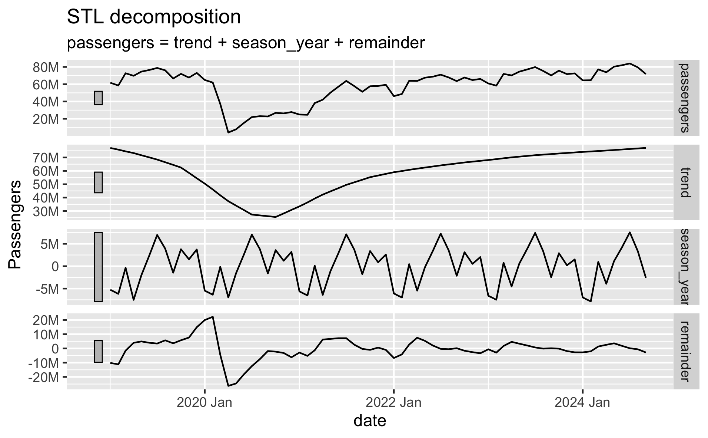
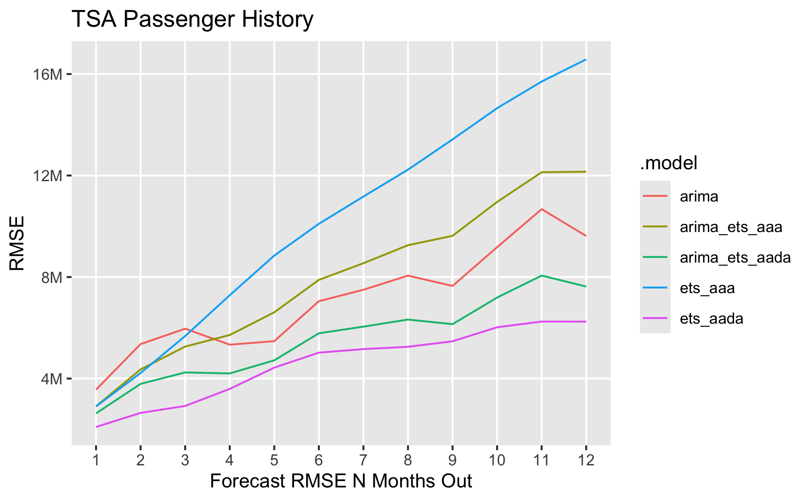

2024-09-27
If we want to create a forecast in R for the TSA Passenger data to predict passenger volumes in the future, we can use the tidyverts packages `fable`, `tsibble`, and `feasts`.
These packages apply tidy data principles to time series data and forecasting. They were coauthored by the forecasting great Rob Hyndman. If you are interested in learning more about forecasting, I highly recommend Rob Hyndman and George Athanasopoulos's fantastic textbook: Forecasting: Principles and Practice (3rd Edition), which uses these tidyverts packages and workflows.
The historical TSA Passenger data that we have looks like this:
We recently learned that our models will likely perform best if we ignore pre-Covid data and just assume history begins at April 2020. So we will use that in our model selection and final forecasts here.
There is clear seasonality in the data, and there has been an upward trend coming out of the Covid downturn.
The fable package provides several time series models to choose from. We can evaluate which models perform the best by breaking our data into separate train/test sets. We then fit each model on the training data, generate a forecast from each model over the test set time period, and we evaluate each model's forecast against our test set to measure accuracy.
The plain ARIMA model performs the best in terms of RMSE. This is using the Auto-ARIMA function that finds the best fitting ARIMA model to the data. The 4th and 5th best are the ETS models with additive error, trend (damped or not), and seasonality. The 2nd and 3rd best are combined models that average the results of the ARIMA and ETS(A, Ad, A) models and ARIMA and ETS(A, A, A) models.
In this case the combined models slightly underperform the plain ARIMA model, but in many cases we can improve our accuracy by combining two or more models.


Based on these results we would likely pick the arima_ets_aada model for our final forecast. While the plain ARIMA model performed slightly better, we'd like to take advantage of the benefit of combining both ARIMA and ETS models - hopefully in the long term going forward that will perform better.
Another approach to time series model evaluation is cross validation. This is a little different from cross validation you may have used in other machine learning contexts. With time series data, we start with an initial base set of historical data, fit our models, calculate forecasts, and measure accuracy. We then repeat adding one (or more) data point to the base historical data, repeating the model fitting, forecasting, and testing for each step with. In each step we're forecasting one or more steps out. Prof. Hyndman uses this visualization in his textbook

One neat benefit of this approach, is that we can see the average model accuracy across all of the CV sets at 1 to 12 steps out. As we'd expect, model accuracy gets worse the further out we try to forecast. We can see that the best performing model across the CV sets is the ETS(A, Ad, A) model, and the second best is the combination of ARIMA and ETS(A, Ad, A).
